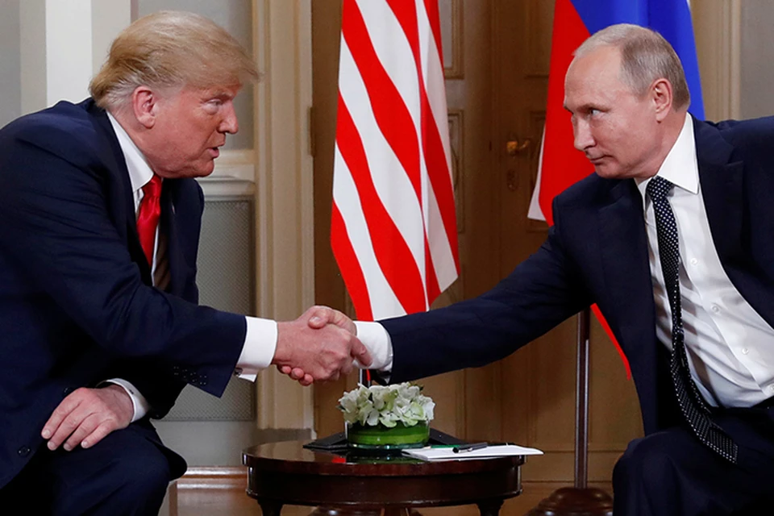

Переговоры Владимира Путина и спецпосланника президента США Стива Уиткоффа, прошедшие в среду в Константиновском дворце в Санкт-Петербурге, продлились около трех часов и заложили основу для активизации российско-американского диалога. По итогам этой встречи глава Российского фонда прямых инвестиций (РФПИ) и спецпредставитель президента РФ Кирилл Дмитриев подчеркнул, что экономическое и инвестиционное сотрудничество между Москвой и Вашингтоном будет продолжаться активно и поступательно, несмотря на попытки европейских стран противодействовать этому сближению. При этом Дмитриев иронично добавил, что сами европейские коллеги по-прежнему закупают у России огромные объемы энергоресурсов.